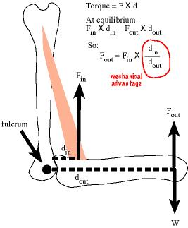
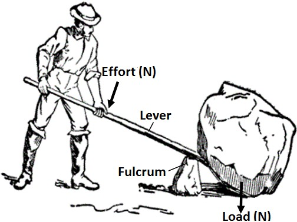
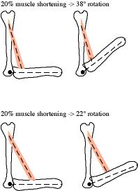

 Figure 2.13: Mechanical advantage.
What may be surprising is that vertebrate musculoskeletal systems are geared. Consider figure 2.13, which is a cartoon of a biceps muscle, a humerus and radius being used to move (or resist being moved by) a load. Here, the load is an invisible coffee mug that weighs \(W\). My biceps muscle doesn’t directly lift the coffee mug but instead the biceps-humerus-radius system generates an output force \(F_{out}\) to hold or move the mug. The force from the contracting biceps muscle is the input force \(F_{in}\). The output force is the useful force. It is what is used to pick up and move stuff. How much (input) force does my biceps need to generate to hold the coffee mug?
To answer this, we need the concept of torque. A torque (or moment), is a force that causes a rotation about an axis through a center of rotation (a fulcrum) and is equal to the force times the distance between the application of the force and the center of rotation.8 \(M = F \times d\). For example, if I apply a force to a wrench, the torque is the force times the length of the handle, since I apply the force at the end of the handle and the center of rotation is the center of the bolt. The distance (\(d\)) is known as the moment arm or lever arm.9 A “moment” is used for other concepts in math and science that are a function of some value multiplied by a distance to a center. And, if the distance is squared, it is a second moment. A cubed distance is a third moment.
The radius rotates around an axis that is perpendicular to the plane of the image and pierces the joint at the center of rotation (fulcrum). The load is applying a torque on the fulcrum. The action of the torque is to rotate the forearm about this axis in a clockwise direction, which increases the joint angle and lengthens the biceps muscle. A contracting biceps muscle is also applying a torque on the fulcrum. The action of this torque is the rotation of the forearm in a counterclockwise motion.
If the output force balances the weight of the coffee mug then the input torque must equal the output torque, or
\[F_{out}d_{out} = F_{in}d_{in}\] which we can re-arrange to solve for output force
\[F_{out}= F_{in}\frac{d_{in}}{d_{out}}\]
A bigger input force generates a bigger output force. A longer input moment arm generates a bigger output force. A smaller output moment arm generates a bigger output force. Consider how these might vary both within an individual and among individuals or species. The input force is the force generated by the muscle. Individuals can control the magnitude of this force and of course there will be variation among individuals and species due ot the size of the muscle, the geometry of the fibers, and the proportions of the different fiber types. The input moment arm is the distance of the insertion of the muscle from the center of rotation in the joint. An individual certainly cannot control this. But there is variation among individuals and among species. The output moment arm is whatever we want it to be. If we want to compute the output force applied 4 cm from the center of rotation then we set the output moment arm to 4 cm. If we consider the output force at the hand, then an individual cannot vary the output moment arm – its simply the length of the forearm. But there will be variation among individuals and among species.
So the input force is a function of the strength of the muscle but an output force is a function of how the muscle is geared, or the gear ratio. This ratio is the length of the input moment arm relative to the length of the output moment arm, which is known as the mechanical advantage.10 \(MA=\frac{d_{in}}{d_{out}}\) Somewhat confusingly, a high gear ratio is a low gear while a low gear ratio is a high gear.
 Figure 2.14: Levers.
Humans have used levers to create a mechanical advantage to move heavy stones for thousands of years (figure 2.14. In the mechanical system created by the lever, the input lever arm (the distance from the applied force by the man to the fulcrum) is much larger than the output lever arm (the distance from the load to the fulcrum), so the mechanical advantage is much greater than one. The lever magnifies the input force and the man can move a much larger rock than he could by simply lifting it directly.
By contrast, the mechanical advantage in the biceps-humerus-radius system above is much smaller than one – our maximum output force is much less than our maximum muscle contractile force. That is, this system is high geared. One advantage of the high gear is that we get large displacement (motion about the joint) with only a small shortening of the muscle. This is the displacement advantage, which is simply the reciprocal of the mechanical advantage.11 \(DA = \frac{d_{out}}{d_{in}}\)
 Figure 2.15: Displacement advantage.
Figure 2.15 shows why a high mechanical advantage and displacment trade-off in a geared system. The biceps-humerus-radius system in the top panel has a smaller mechanical advantage than that in the bottom panel because the muscle inserts closer to the joint, that is the input moment arm is shorter so \(MA\) is smaller. The right side figures show the movement that occurs with 20% shortening of the muscle (the length of the muscle in the right side figures are literally 20% shorter than those in the left side). The radius in the top panel, with the smaller \(MA\), rotated 38 degrees while the radius in the bottom panel, with the larger \(MA\), only rotated 22 degrees. The smaller input moment arm in the top system increased the displacement advantage.